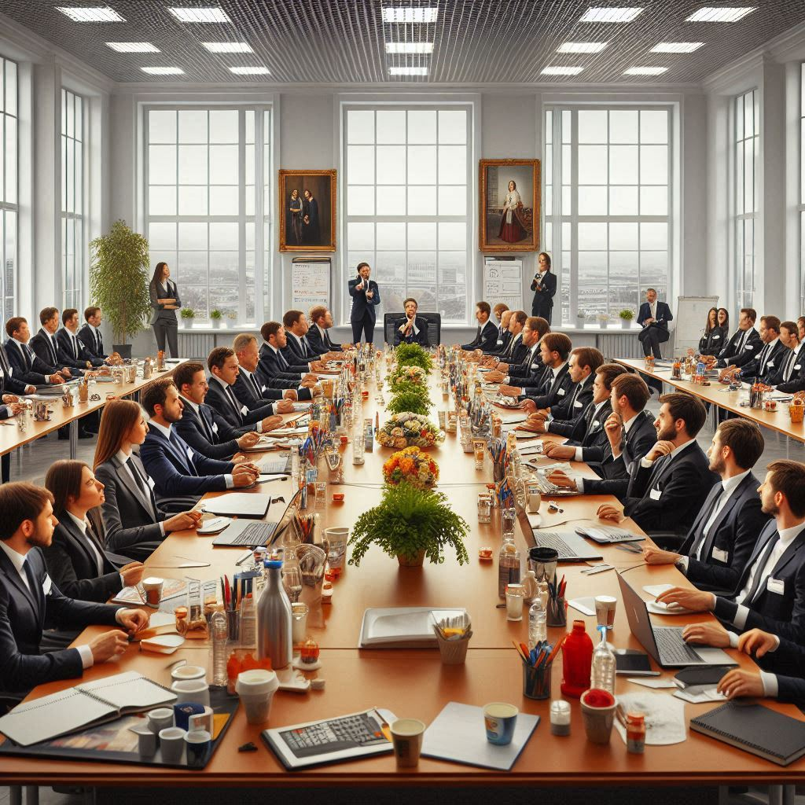

Про нас
Департамент кадрової політики Міністерства оборони України — це ключова ланка у забезпеченні ефективного управління людським капіталом у секторі оборони.
Наша місія — забезпечення професійного, прозорого та ефективного кадрового менеджменту для зміцнення обороноздатності України.
Історія
Департамент кадрової політики був створений для впровадження сучасних підходів до управління кадрами, адаптуючи найкращі світові практики до реалій сектору оборони України.
Наші цінності
Прозорість, відповідальність, інновації та людяність — це основа нашої роботи.
↓
Наша команда
Познайомтеся з тими, хто формує кадрову політику у секторі оборони України.
Фото та галерея

×

Наші досягнення
Досягнення Департаменту у сфері кадрової політики:
Наші досягнення у цифрах
0
Співробітників у системі
0
Звітів підготовлено
0
Навчальних заходів
0
Годин роботи над ініціативами
Наші ініціативи
- Впровадження автоматизації кадрових процесів.
- Розробка електронної системи управління персоналом.
- Організація навчальних програм для співробітників.